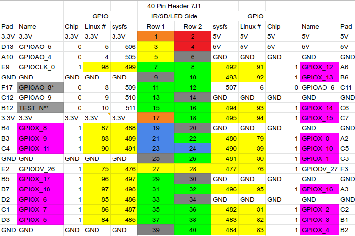

Importing the module
To import the libregpio module:
import libregpio as GPIO
This way allows you to refer to it as GPIO for the rest of your program.
PIN Reference
This module is designed to work with the 40-pin chip of Libre Computer AML-S905X-CC “LePotato”.
Note
Please, see Libre Computer’s GPIO Headers Reference for full functions documentation: https://docs.google.com/spreadsheets/d/1U3z0Gb8HUEfCIMkvqzmhMpJfzRqjPXq7mFLC-hvbKlE/edit#gid=0
To access GPIO pins with this module, a class instance needs to be created. The pins are referred to by their GPIO name.
This is an example of an IN (input) class instance set to use ‘GPIOX_4’ pin:
import libregpio as GPIO
a_pin = GPIO.IN('GPIOX_4')
How to use
As noted in the previous section, GPIO pins are handled as class instances based on their intended use. Here we will run through some code examples.
Note
Please, take notice that the cleanup() method is used at the end of every example. This is recommended to avoid leaving any pins on a high state after the end of your program.
IN Class examples
This section contains examples on how to use GPIO pins as inputs.
Read a current GPIO value
In this example we create an instance of the libregpio.IN class and call the input method to read the pin value:
import libregpio as GPIO
# set pin GPIOX_12 to be used as an input
pin = GPIO.IN('GPIOX_12')
# read pin value
value = pin.input()
# print read value
print(value)
GPIO.cleanup()
Pull up and Pull down resistors
When using a pin as an input it may be at a floating state, sending unreliable values. To prevent this, the bias parameter can be used in the input method to set pull-up or pull-down resistors.
This is the same example as above, but setting a pull-down bias:
import libregpio as GPIO
# set pin GPIOX_12 to be used as an input
pin = GPIO.IN('GPIOX_12')
# read pin value with a pull-down resistor
value = pin.input(bias='pull-down')
# print read value
print(value)
GPIO.cleanup()
Wait for an edge event
In some applications you may want your program to wait for a falling-edge or rising-edge event. For this, you can use the wait_for_edge method.
In this example we are using a PIR motion sensor connected to the GPIOX_12 pin. The program waits for a rising-edge event before printing the corresponding value:
import libregpio as GPIO
# set pin GPIOX_12 to be used as an input
pin = GPIO.IN('GPIOX_12')
# wait for a rising-edge event. Bias is set to pull-down
value = pin.wait_for_edge(bias='pull-down', edge='rising')
# print event value
print(value)
GPIO.cleanup()
Note
You can use the num_events parameter if you want to wait for more than one event occurrence.
OUT Class examples
In this section, we will turn an LED on for three seconds using the different methods of the libregpio.OUT class.
output method
import libregpio as GPIO
from time import sleep
# set pin GPIOX_5 to be used as an output
led = GPIO.OUT('GPIOX_5')
# send a 1 value and return it to 0 after 3 seconds
led.output(1)
sleep(3)
led.output(0)
GPIO.cleanup()
high and low methods
import libregpio as GPIO
from time import sleep
# set pin GPIOX_5 to be used as an output
led = GPIO.OUT('GPIOX_5')
# set the pin output to high and return to low after 3 seconds
led.high()
sleep(3)
led.low()
GPIO.cleanup()
toggle method
import libregpio as GPIO
from time import sleep
# set pin GPIOX_5 to be used as an output
led = GPIO.OUT('GPIOX_5')
# set the pin output to high and return to low after 3 seconds
led.toggle()
sleep(3)
led.toggle()
GPIO.cleanup()
API documentation
Warning
Although this module contains a PWM class, it is not currently working properly. Be aware that using this class and its methods can lead to unexpected results.
- class libregpio.IN(pin)
Bases:
objectThis is a class representantion of a GPIO pin to be used as an input.
- Parameters
pin (str) – GPIO pin name (i.e. GPIOX_4)
- input(bias='as-is')
Read an input value from a libregpio.IN object.
This method can read the pin input value at a given time.
Use the bias parameter to enable pull-up or pull-down modes.
- Parameters
bias (str, optional) –
pull-up,pull-down,as-is,disable- Returns
Input value read from GPIO pin (i.e.
0or1)- Return type
int
- wait_for_edge(bias='as-is', edge='rising', num_events=1, active_low=False)
Returns an input value when a specific edge event is detected. This method is designed to stop your program execution until an event is detected.
- Parameters
bias (str, optional) –
pull-up,pull-down,as-is,disableedge (str, optional) – Type of event to wait for (
rising,falling), defaults to ‘rising’num_events (Boolean, optional) – number of events to wait for. defaults to 1
active_low – Set pin to active-low state (
True,False). defaults to False.
- Returns
1for rising0for falling- Return type
int
- class libregpio.OUT(pin)
Bases:
objectThis is a class representantion of a GPIO pin to be used as an output.
- Parameters
pin (str) – GPIO pin name (i.e. GPIOX_4)
- active_low()
Set libregpio.OUT object to active_low.
- high()
Set a value of
1to a libregpio.OUT object.
- low()
Set a value of
0to a libregpio.OUT object
- output(value)
Set an output value to a libregpio.OUT object (i.e.
0or1).- Parameters
value (int) – output value to be sent to GPIO pin
- toggle()
Toggle output value of a GPIO pin
- class libregpio.PWM(pin, duty_cycle, freq)
Bases:
ThreadThis is a class representantion of a GPIO pin to be used as an PWM output.
Use only with pins compatible with PWM (pulse width modulation).
Creating the class instance does not automatically sends a PWM output.
- Parameters
pin (str) – GPIO pin name (i.e. GPIOX_4)
duty_cycle (int) – duty cycle percentage
freq (float) – frequency in Hertz
- change_duty_cycle(duty_cycle)
Modify the current duty cycle
- Parameters
duty_cycle (int) – duty cycle percentage
- change_freq(freq)
Modify the current frequency
- Parameters
freq (float) – frequency in Hertz
- pulse_loop()
This method is called by
start()to loop the pulse output on a different threadDo not call this method outside of this class.
- start(duty_cycle=None)
Start the PWM output.
You can update the duty cycle when starting this method.
- Parameters
duty_cycle (int, optional) – duty cycle percentage, defaults to None
- stop()
Stop the PWM output
It ‘cleans up’ the GPIO pin.
- libregpio.cleanup(pins=None)
By Default, it sets all pins to
0but you can pass a list if only specific pins need to be cleaned up.It is recommended to use this method at the end of your program.
- Parameters
pins (iterable, optional) – list/tuple of pin or pins by name, defaults to
None
- libregpio.set_chip(pin_name)
Select the gpio chip corresponding to the pin. Do not call this function.
- Parameters
pin_name (str) – gpio pin name
- Returns
gpio chip
- Return type
str